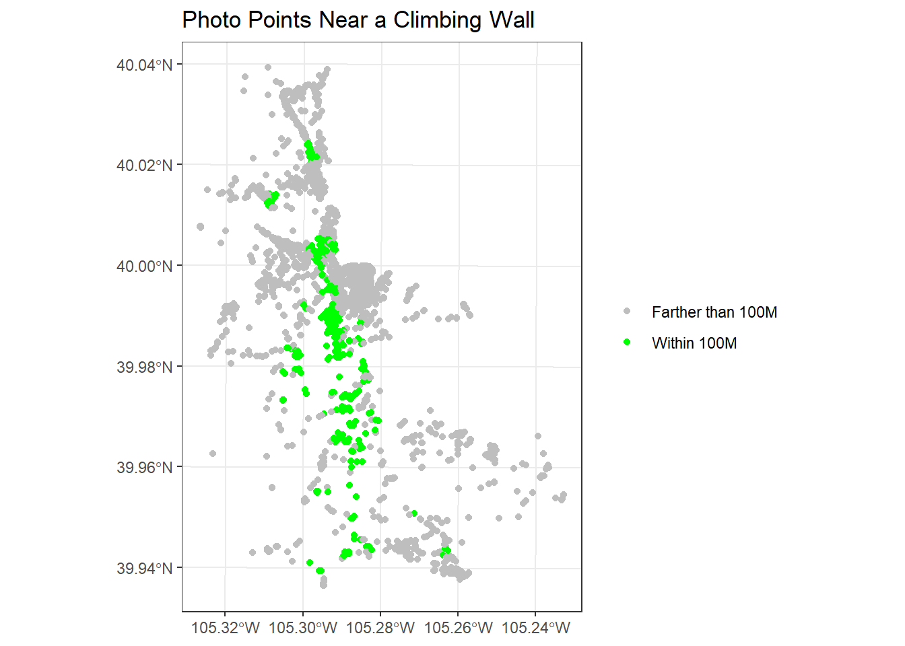
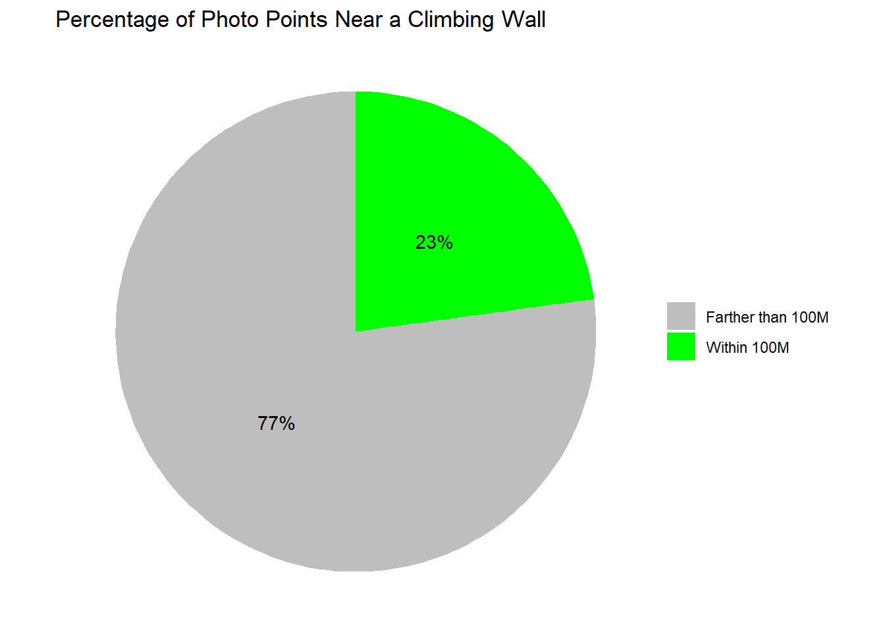

In this project, I created a geovisualization and pie chart depicting
where and how often social media photos are taken near rock climbing
walls in Boulder, CO, using the ggplot2, sf,
and tidyverse packages.
First, I loaded the necessary packages.
library(ggplot2)
library(sf)
library(tidyverse)Next, I loaded in my dataset and projected the data to UTM Zone 13N.
boulder <- st_read("../BoulderSocialMedia/BoulderSocialMedia.shp")
boulder = st_transform(boulder, 26913) As an avid rock climber myself, I was interested in visualizing where in Boulder photos were taken near climbing walls. First, I found which points were within 100 m of a climbing wall and tagged them as TRUE, and tagged points farther than 100 m from a climbing wall as FALSE. Points that were close to climbing walls were then symbolized as green and those that were not as gray. I also added a descriptive title and legend labels.
boulder %>%
filter(DB == 'Pano' | DB == 'Flickr') %>%
mutate(close_to_climbing = ifelse(Climb_dist <= 100, TRUE, FALSE))%>%
ggplot() +
geom_sf(aes(color=close_to_climbing),
fill = NA, alpha = 1) +
scale_color_manual(values = c("TRUE" = "green", "FALSE" = "gray"),
labels = c("Farther than 100M","Within 100M")
) +
ggtitle("Photo Points Near a Climbing Wall")+
labs(color=NULL)+
theme_bw()
Next, I wanted to see how many of the photo points were near a climbing wall out of the total number of points. I again filtered the data for just social media points and marked which ones were within 100 m of a climbing wall and which ones were not. I then summarized how many points were near climbing walls and calculated the total percentages. After calculating these percentages, I created a pie chart to visually represent them.
# Summarize data for pie chart
pie_data <- boulder %>%
filter(DB %in% c('Pano', 'Flickr')) %>%
mutate(close_to_climbing = ifelse(Climb_dist <= 100, "Within 100M", "Farther than 100M")) %>%
count(close_to_climbing) %>%
mutate(percent = n / sum(n) * 100)
# Create pie chart
ggplot(pie_data, aes(x = "", y = percent, fill = close_to_climbing)) +
geom_bar(stat = "identity", width = 1) +
coord_polar(theta = "y") + # convert to pie
geom_text(aes(label = paste0(round(percent), "%")),
position = position_stack(vjust = 0.5)) + # add labels inside slices
scale_fill_manual(values = c("Within 100M" = "green", "Farther than 100M" = "gray")) +
labs(fill = NULL) + # remove legend title
theme_void() + # remove axes/background
ggtitle("Percentage of Photo Points Near a Climbing Wall")
Through this project, I learned how to use R markdown files, how to
better use ggplot2 to visualize both maps and charts, and
some insights into the photos taken in Boulder. R markdown files allow R
scripts to be integrated into an HTML file so that code chunks and
resulting visualizations can be presented in a legible and appealing
way. ggplot2 is a powerful library that provides tools to
customize maps and charts. All of the elements of the plots can be fine
tuned to a users specific needs and the end results are clean, simple
figures. From my simple analysis, I learned that rock climbing is quite
a popular sport in Boulder as almost a quarter of the photo points from
the area were taken near a climbing wall.
Discuss the advantages and challenges associated with an open data science approach. Provide an example based on this week’s reading.
There are many benefits to open data science. Being transparent about the data and the methods used to analyze the data creates trust between the scientist and the audience. Beyond creating a sense of trust, transparency also contributes to another advantage of open data: verification. With access to the data and methods, others can verify that the outcomes of the analysis are actually accurate. Open data science practices also have the potential to create new knowledge. When more people have access to the data/methods, new ideas on how to apply the data or methods to different projects can arise.
A potential challenge that comes with open data science is protecting privacy. When releasing a data set for public use, it is extremely important that the privacy of anyone whose data was collected as a part of the data set is protected and any identifying information is obscured. For example, from this week’s reading, “Big data and human geography: Opportunities, challenges, and risks” by Rob Kitchin, a large data set on U.S. voters was collected by the Obama campaign but never made public. This data set could be useful to many projects if made public, but the privacy of individuals whose data was collected must be protected.